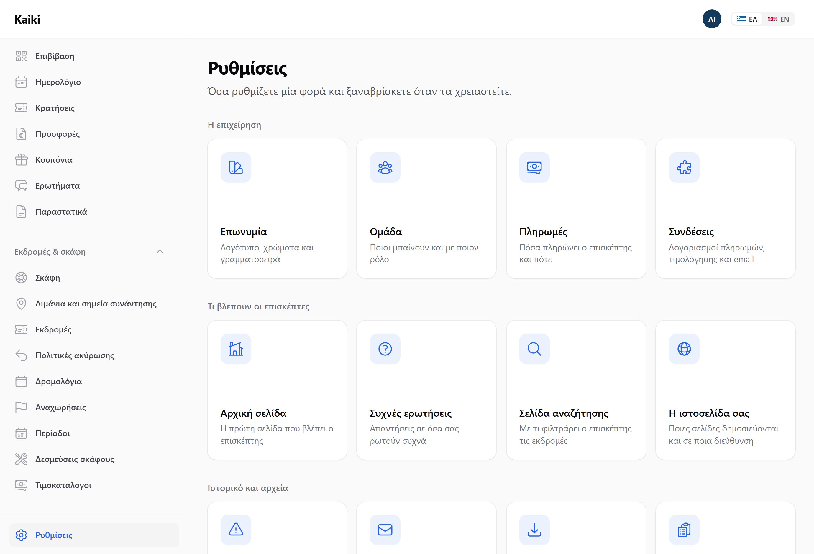

Η κράτηση έγινε. Τώρα δουλεύουμε σαν διοργανωτής που έχει πελάτες — που είναι όπου περνάει ο περισσότερος χρόνος στην πραγματικότητα.
Με μία κράτηση μέσα, τα νούμερα αρχίζουν να λένε κάτι. Κάθε ένα γράφει από κάτω τι ακριβώς μετράει — αν κάποιο δεν βγάζει νόημα ή δεν συμφωνεί με ό,τι βλέπετε αλλού, αυτό είναι εύρημα.
Η κράτησή σας πρέπει να φαίνεται πάνω στο σκάφος, με ορατό το κενό προετοιμασίας γύρω της.
Από την αναχώρηση. Είναι το έγγραφο που διαβάζει το λιμεναρχείο. Αν βάλατε βρέφος, πρέπει να είναι μέσα παρότι δεν πιάνει θέση.
Ανοίξτε http://192.168.1.43:8000/app/check-in από τηλέφωνο στο
ίδιο δίκτυο. Σαρώστε το QR του εισιτηρίου (το PDF είναι στο email, στο
:8025) ή πληκτρολογήστε τον κωδικό κάτω από αυτό. Δοκιμάστε
το ίδιο εισιτήριο δύο φορές — πρέπει να το πει καθαρά, όχι να
βγάλει σφάλμα. Και έναν επιβάτη χωρίς εισιτήριο: βρείτε το
όνομα στη λίστα και πατήστε «Επιβίβαση».
Αν η αναχώρηση απέχει πάνω από μισή ώρα, η γραμμή δείχνει «Πρόωρη επιβίβαση» αντί για «Επιβίβαση». Πρέπει να ζητήσει λόγο — και ο λόγος να φαίνεται μετά στις Ρυθμίσεις → Ιστορικό ενεργειών.
Στην «Επιβίβαση» πατήστε «Χωρίς σήμα στην προβλήτα;». Με τη σελίδα ανοιχτή, κλείστε το Wi-Fi και τα δεδομένα του κινητού και πατήστε «Επιβίβαση» δίπλα σε ένα όνομα: πρέπει να πει «Καταγράφηκε — θα σταλεί μόλις βρεθεί σήμα», και πάνω δεξιά «Χωρίς σήμα». Ανοίξτε ξανά το δίκτυο: πρέπει να σταλεί μόνο του και να φανεί και στην οθόνη του γραφείου.
Στο /admin, στον διοργανωτή σας, κλείστε το «Επιβίβαση με QR»
(μέρος Γ). Κάντε μία ακόμη κράτηση: το εισιτήριο πρέπει να βγει
χωρίς QR. Στην «Επιβίβαση» και στη σελίδα χωρίς σήμα δεν
πρέπει να υπάρχει πεδίο σάρωσης — μόνο η λίστα με το κουμπί. Ένα παλιό QR
πρέπει να ανοίγει τη λίστα χωρίς να επιβιβάσει κανέναν. Στο τέλος ξανανοίξτε
τον διακόπτη.
Ακυρώστε την κράτηση και δείτε τι υπολογίζει η πολιτική που φτιάξατε. Η επιστροφή βγαίνει από την πολιτική που ίσχυε όταν έγινε η κράτηση, όχι από τη σημερινή — δοκιμάστε να αλλάξετε την πολιτική μετά την κράτηση και δείτε ότι δεν αλλάζει το ποσό.
Ξεχωριστή διαδρομή. Πρέπει πρώτα να σας δείξει ποιος παίρνει τι πίσω, και μόνο μετά να στείλει. Τίποτα δεν ακυρώνεται μόνο του.
Φτιάξτε εκδρομή «κατόπιν ζήτησης», ζητήστε τιμή ως πελάτης, και στην κράτηση που θα εμφανιστεί πατήστε Δημιουργία προσφοράς. Συμπληρώστε γραμμές, στείλτε, και ανοίξτε τον σύνδεσμο σαν πελάτης.
Ρυθμίσεις → Ομάδα. Προσκαλέστε συνάδελφο ως
διαχειριστή και άλλον ως πλήρωμα. Η πρόσκληση φτάνει στο
:8025· ο καθένας ορίζει δικό του κωδικό και μπαίνει. Μετά
συγκρίνετε τι βλέπει: ο διαχειριστής δεν πρέπει να έχει τις
κάρτες «Συνδέσεις» και «Πληρωμές» στις Ρυθμίσεις, και το πλήρωμα δεν πρέπει να
έχει καθόλου «Ρυθμίσεις» στο μενού.
Ο μηχανισμός τιμολόγησης είναι χτισμένος, αλλά η αποστολή στην ΑΑΔΕ χρειάζεται διαπιστευτήρια που δεν υπάρχουν ακόμη. Η οθόνη θα λέει «Κανένα παραστατικό». Δεν είναι σφάλμα — είναι η τίμια συμπεριφορά· τίποτα δεν πρέπει να μοιάζει καταχωρημένο στην εφορία ενώ δεν είναι.
Όπου ο οδηγός γράφει «Ρυθμίσεις → …»: το κουμπί Ρυθμίσεις είναι κάτω κάτω στο αριστερό μενού και ανοίγει μια σελίδα με κάρτες. Πατάτε την κάρτα και μπαίνετε· στην κορυφή κάθε οθόνης υπάρχει «Πίσω στις ρυθμίσεις».

Ρυθμίσεις → Τι πήγε στραβά. Μία λίστα με κάθε αποτυχία που μπορεί να δει διοργανωτής — email που δεν έφυγε, ειδοποίηση που δεν παραδόθηκε, συγχρονισμός που έσπασε — με κουμπί επανάληψης εκεί όπου η επανάληψη κάνει κάτι. Όταν υπάρχει κάτι εκεί, φαίνεται και ως κόκκινος αριθμός πάνω στις Ρυθμίσεις στο μενού. Αν κάτι δεν δούλεψε στις δοκιμές σας, κοιτάξτε εδώ πριν το αναφέρετε: μπορεί να σας πει το γιατί.